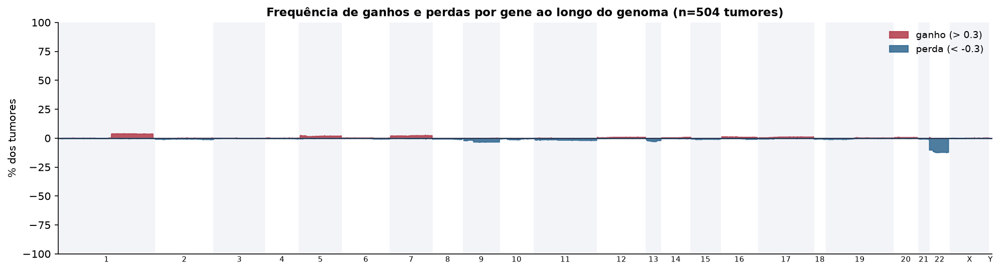
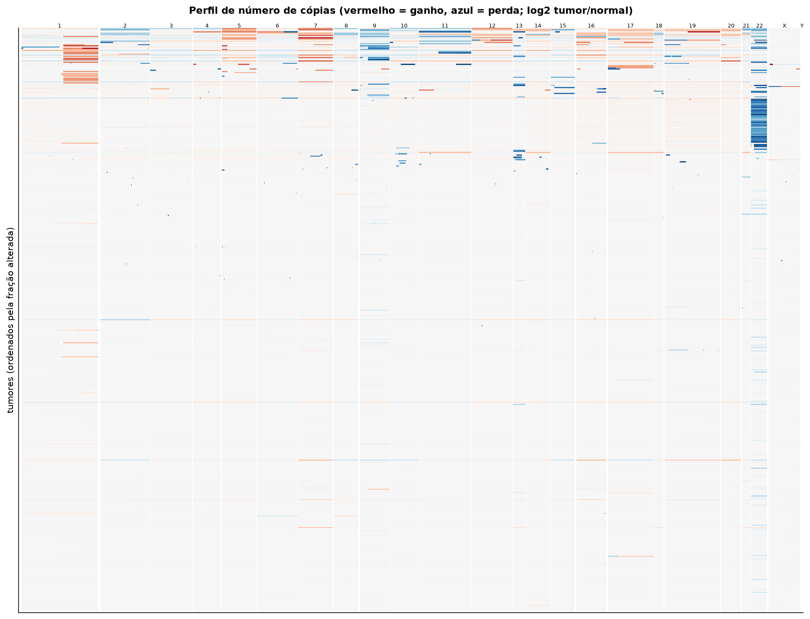
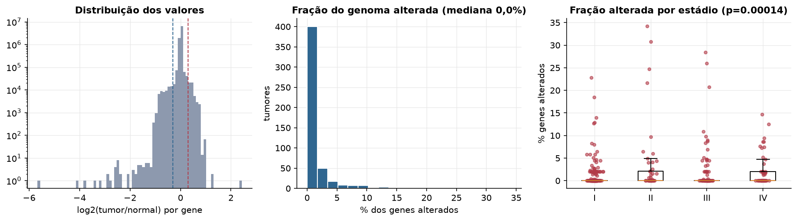
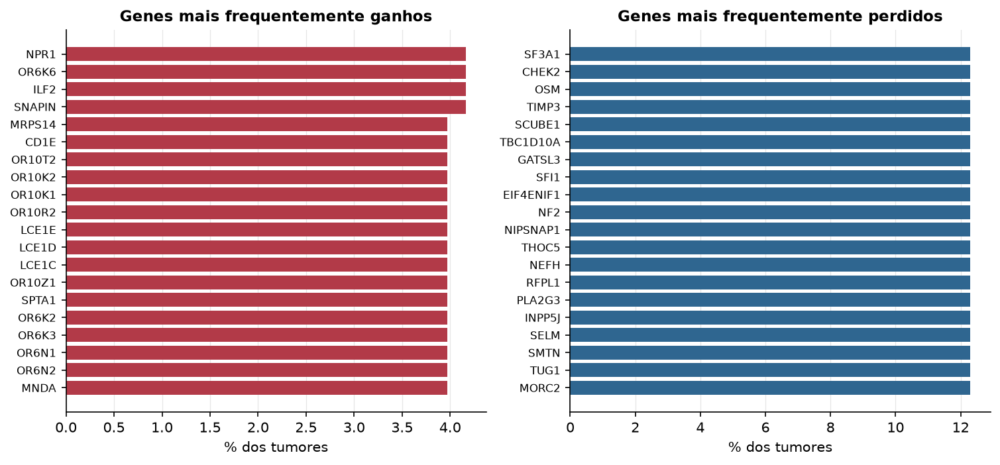

THCA · Número de cópias (CNV)
Affymetrix SNP6, segmentos whitelisted do PanCanAtlas · gerado em 22/10/2026 05:13
504tumores
17.738genes
0,0%fração alterada mediana
49segmentos/tumor (mediana)
Fonte: SNP6 whitelisted (PanCanAtlas); nível de gene calculado dos segmentos (hg19)
O valor por gene é o do segmento que cobre o meio do gene (log2 tumor/normal, hg19). Sem correção de pureza e ploidia: tumores com pouca célula tumoral têm valores atenuados. Para chamadas discretas (−2 a 2), use o GISTIC2 do PanCanAtlas ou o ABSOLUTE.
Principais resultados
- Mediana de 0,0% dos genes com ganho ou perda por tumor (limiares log2 de 0.3 e -0.3).
- O cromossomo com mais ganhos em média é o 7 (2,2% dos tumores por gene) e o com mais perdas é o 22 (10,6%).
- Genes mais ganhos: NPR1 (4%), OR6K6 (4%), ILF2 (4%), SNAPIN (4%), MRPS14 (4%), CD1E (4%). Genes mais perdidos: SF3A1 (12%), CHEK2 (12%), OSM (12%), TIMP3 (12%), SCUBE1 (12%), TBC1D10A (12%).
- Fração alterada por estádio: Kruskal-Wallis p=0.00014.
Paisagem ao longo do genoma


Carga de alterações

Genes recorrentes

Top 25 genes por frequência de ganho
| gene | chrom | % ganho | % perda | média log2 |
|---|---|---|---|---|
| NPR1 | 1 | 4.2 | 0 | 0.025 |
| OR6K6 | 1 | 4.2 | 0 | 0.025 |
| ILF2 | 1 | 4.2 | 0 | 0.025 |
| SNAPIN | 1 | 4.2 | 0 | 0.025 |
| MRPS14 | 1 | 4 | 0 | 0.025 |
| CD1E | 1 | 4 | 0 | 0.024 |
| OR10T2 | 1 | 4 | 0 | 0.024 |
| OR10K2 | 1 | 4 | 0 | 0.024 |
| OR10K1 | 1 | 4 | 0 | 0.024 |
| OR10R2 | 1 | 4 | 0 | 0.024 |
| LCE1E | 1 | 4 | 0 | 0.024 |
| LCE1D | 1 | 4 | 0 | 0.024 |
| LCE1C | 1 | 4 | 0 | 0.024 |
| OR10Z1 | 1 | 4 | 0 | 0.024 |
| SPTA1 | 1 | 4 | 0 | 0.024 |
| OR6K2 | 1 | 4 | 0 | 0.024 |
| OR6K3 | 1 | 4 | 0 | 0.024 |
| OR6N1 | 1 | 4 | 0 | 0.024 |
| OR6N2 | 1 | 4 | 0 | 0.024 |
| MNDA | 1 | 4 | 0 | 0.024 |
| PYHIN1 | 1 | 4 | 0 | 0.024 |
| IFI16 | 1 | 4 | 0 | 0.024 |
| AIM2 | 1 | 4 | 0 | 0.024 |
| CADM3 | 1 | 4 | 0 | 0.024 |
| FCER1A | 1 | 4 | 0 | 0.024 |
Top 25 genes por frequência de perda
| gene | chrom | % ganho | % perda | média log2 |
|---|---|---|---|---|
| SF3A1 | 22 | 0 | 12.3 | -0.091 |
| CHEK2 | 22 | 0 | 12.3 | -0.091 |
| OSM | 22 | 0 | 12.3 | -0.091 |
| TIMP3 | 22 | 0 | 12.3 | -0.091 |
| SCUBE1 | 22 | 0 | 12.3 | -0.093 |
| TBC1D10A | 22 | 0 | 12.3 | -0.091 |
| GATSL3 | 22 | 0 | 12.3 | -0.091 |
| SFI1 | 22 | 0 | 12.3 | -0.091 |
| EIF4ENIF1 | 22 | 0 | 12.3 | -0.091 |
| NF2 | 22 | 0 | 12.3 | -0.091 |
| NIPSNAP1 | 22 | 0 | 12.3 | -0.091 |
| THOC5 | 22 | 0 | 12.3 | -0.091 |
| NEFH | 22 | 0 | 12.3 | -0.091 |
| RFPL1 | 22 | 0 | 12.3 | -0.091 |
| PLA2G3 | 22 | 0 | 12.3 | -0.091 |
| INPP5J | 22 | 0 | 12.3 | -0.091 |
| SELM | 22 | 0 | 12.3 | -0.091 |
| SMTN | 22 | 0 | 12.3 | -0.091 |
| TUG1 | 22 | 0 | 12.3 | -0.091 |
| MORC2 | 22 | 0 | 12.3 | -0.091 |
| ISX | 22 | 0 | 12.3 | -0.091 |
| PACSIN2 | 22 | 0 | 12.3 | -0.092 |
| OSBP2 | 22 | 0 | 12.3 | -0.091 |
| DUSP18 | 22 | 0 | 12.3 | -0.091 |
| HMGXB4 | 22 | 0 | 12.3 | -0.091 |